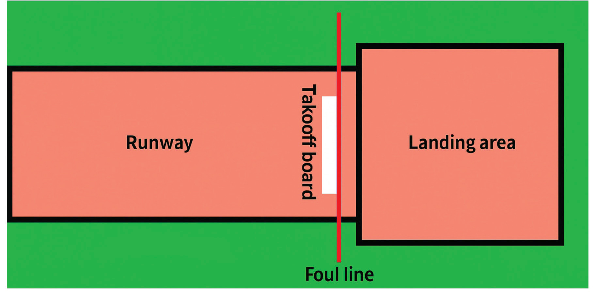

- (ii) Wearing clean, properly fitted footwear and attire;
- (iii) Inspecting the landing and run-up areas before the event and removing any objects that could pose a risk of injury to jumpers;
- (iv) Performing warm-up exercises before the event and cool-down exercises afterwards; and
- (v) Preparing a first aid kit with all necessary medical supplies.
Horizontal jumping events
Horizontal jumps require the athlete to jump as far as possible from a take-off board into a sandpit. Horizontal jumping events include long jump and triple jump.
Long jump
A long jump is a horizontal jumping event in which an athlete attempts to cover the greatest distance possible from the take-off board to the landing point.
Facilities and equipment
The long jump requires a long jump facility, also called a long jump area and a variety of equipment such as measuring tapes, marking devices, and maintenance tools. Proper facility setup and the right equipment contribute to accurate measurements, athlete’s consistency, and overall event efficiency.
Long jump area
The jumping area for the long jump consists of three key components: the runway, take-off board, and landing area as shown in Figure 2.17.

Runway
The runway must be at least 40 metres long and 1.22 m wide. It is measured from the start of the runway to the take-off board and is marked with white lines or broken lines measuring 0.05 m wide, 0.10 m long, and spaced 0.50 m apart.